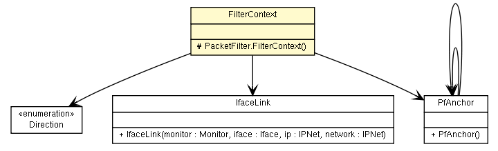

fr.univrennes1.cri.jtacl.equipments.openbsd
Class PacketFilter.FilterContext

java.lang.Object
 fr.univrennes1.cri.jtacl.equipments.openbsd.PacketFilter.FilterContext
fr.univrennes1.cri.jtacl.equipments.openbsd.PacketFilter.FilterContext
- Enclosing class:
- PacketFilter
protected class PacketFilter.FilterContext
- extends java.lang.Object
Filter context
| Methods inherited from class java.lang.Object |
clone, equals, finalize, getClass, hashCode, notify, notifyAll, toString, wait, wait, wait |
_anchor
protected PfAnchor _anchor
_direction
protected Direction _direction
_link
protected IfaceLink _link
PacketFilter.FilterContext
protected PacketFilter.FilterContext()
getDirection
public Direction getDirection()
setDirection
public void setDirection(Direction _direction)
getLink
public IfaceLink getLink()
setLink
public void setLink(IfaceLink link)
getAnchor
public PfAnchor getAnchor()
setAnchor
public void setAnchor(PfAnchor anchor)
newInstance
public PacketFilter.FilterContext newInstance()
Copyright © 2010. All Rights Reserved.